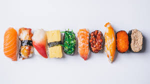

Miso Yaki Ongiri
Category: Japanese, Vegeterian / Author : Zizi-cook /
Date:July 13, 2024

Ingredients
- 2 Tsp Miso
- 1 Tsp of sugar
- 1 Tsp of marini
- 3 cups of cooked Japanese short-grain rice.
- 10- 12 shiso leaves (optional)
- 2 tsp of roasted white sesemi seeds salt
- 1/2 tsp of olive oil
Instructions
-
Rinse and cook 2 cups of sushi rice, then mix it with 1/3 cup rice
vinegar, 3 tablespoons sugar, and 1 teaspoon salt, and let it cool.
- Slice fresh fish, cucumber, avocado, and other desired fillings into
thin strips.
-
Place a bamboo sushi mat covered with plastic wrap on a flat
surface, then put a sheet of nori shiny side down on the mat.
-
Spread a thin layer of rice over the nori, add fillings in the
center, and use the mat to roll the sushi tightly, sealing the edge
with water.